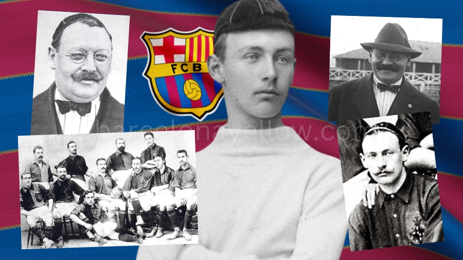
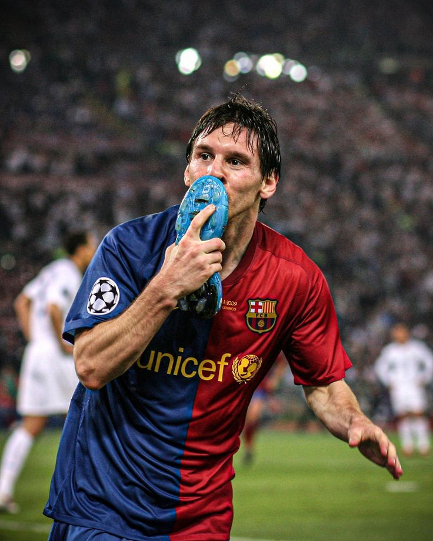

Fondation et Premières Années (1899-1920) :
Le FC Barcelone a été fondé le 29 novembre 1899 par un groupe de sportifs dirigé par Joan Gamper. Dès ses débuts, le club s'est distingué en remportant des titres locaux et régionaux, affirmant son rôle central dans la promotion du football en Catalogne.
Montée en Puissance (1920-1950) :
Dans les années 1920 - 1950, le FC Barcelone devient un symbole de la fierté catalane. Sous la dictature de Primo de Rivera et plus tard celle de Franco, le club traverse des périodes difficiles mais reste un refuge pour l'identité catalane.

Âge d'Or et Succès Européens (1950-1990) :
Avec des joueurs légendaires comme Johan Cruyff, le Barça brille sur la scène internationale. En 1974, Cruyff mène l'équipe à une victoire historique 5-0 contre le Real Madrid, renforçant la rivalité éternelle entre les deux clubs.

L’Ère Moderne et la Domination Mondiale (2000-Présent)
Sous la direction de Pep Guardiola (2008-2012), le Barça révolutionne le football avec le style "tiki-taka", mené par des joueurs comme Lionel Messi, Xavi, et Iniesta. Le club remporte plusieurs triplés historiques et s’impose comme l’un des plus grands clubs de tous les temps.
